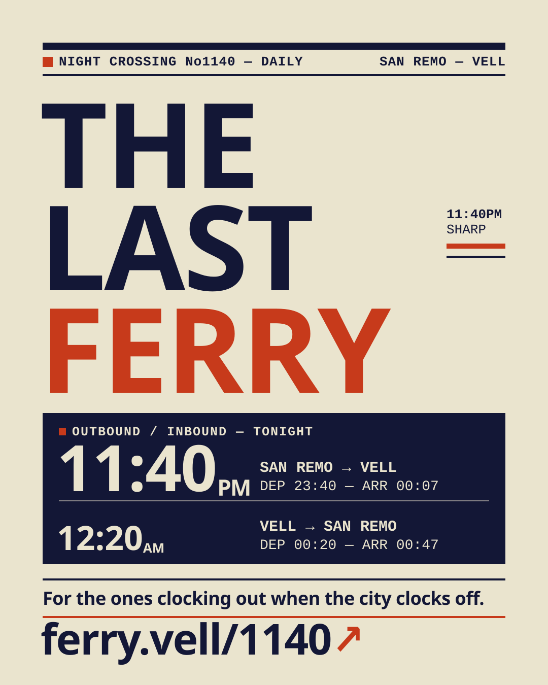

01 · Poster
prompt (thin)
Design a poster for "The Last Ferry, 11:40pm" — a late-night ferry crossing between two islands. Output: one SVG file, 1080 × 1350.
prompt (thick)
A poster for "The Last Ferry", the 11:40pm crossing between San Remo and the island of Vell. Output: one SVG file, 1080 × 1350. Must contain: the title, the time, both directions, one line of copy, and the URL `ferry.vell/1140`. Audience: night-shift workers, 24–40, urban and tired. It is seen on a phone at 11pm but printed at A2. Direction: two inks plus one paper tone. A condensed grotesque for the display, a monospace for the timetable block. Margins no tighter than 7% of the shorter edge. No imagery other than type and hard geometry. Avoid: gradients, drop shadows, faux paper texture, badges or stickers, stock photography, everything centred. Success: legible at phone size, unmistakably a schedule, and something a person would tear off a wall.


02 · Interface
prompt (thin)
Build the hero and one value section for Inkwell, a tool that turns handwritten notes into LaTeX. Output: one HTML file, 1440 × 900, no page scrolling.
prompt (thick)
Build the hero and one value section for Inkwell. Output: one HTML file, 1440 × 900, no page scrolling. What it is: you photograph a page of handwriting and get clean LaTeX back, with the original and the rendered output side by side. Must contain: the product name; a headline; one sentence explaining the conversion; three concrete capabilities — equations and tables handled, revision history per page, export to `.tex` or `.pdf`; a primary action "Try a page free"; a secondary action "See a real conversion". Audience: PhD students and researchers who already write LaTeX daily and distrust marketing pages. Direction: show the product rather than describe it — the hero must display a photograph of handwriting beside its rendered output, drawn with CSS or inline SVG. Use one serif for the headline and one grotesque for interface text. A muted, paper-like palette. Avoid: gradient hero, purple, centred hero with a blurred blob, three identical feature cards, emoji as icons, the words seamless / elevate / unlock, a fake "trusted by" logo strip. Success: at 1440 × 900 a researcher knows what it does within three seconds and has seen evidence it works.
03 · Critique
prompt (thin)
Here is a landing page I shipped. Critique it, then fix it. Output: one HTML
file at 1440 × 900, containing the improved page, with a note of at most 150
words in an HTML comment at the top explaining what you changed.
```html
<!doctype html>
<html><head><meta charset="utf-8"><title>Ferryline — Book your crossing</title>
<style>
body{margin:0;font-family:Inter,system-ui,sans-serif;color:#111;background:#fff}
.hero{padding:120px 40px;text-align:center;background:linear-gradient(135deg,#7c3aed,#ec4899);color:#fff}
h1{font-size:56px;margin:0 0 16px}
p{font-size:20px;opacity:.9;max-width:640px;margin:0 auto 32px}
.cta{display:inline-block;padding:16px 32px;border-radius:999px;background:#fff;color:#7c3aed;font-weight:600;text-decoration:none}
.cards{display:grid;grid-template-columns:repeat(3,1fr);gap:24px;padding:80px 40px}
.card{border:1px solid #eee;border-radius:16px;padding:32px;background:#fafafa}
.card h3{margin:0 0 12px}
footer{padding:40px;text-align:center;color:#666;font-size:14px}
</style></head>
<body>
<section class="hero">
<h1>Book your crossing in seconds</h1>
<p>Ferryline connects you to the islands you love with a seamless, modern
booking experience that puts you first.</p>
<a class="cta" href="#">Get started</a>
</section>
<section class="cards">
<div class="card"><h3>Fast</h3><p>Book in under a minute with our streamlined flow.</p></div>
<div class="card"><h3>Simple</h3><p>No hidden fees, no surprises, just clear pricing.</p></div>
<div class="card"><h3>Reliable</h3><p>Thousands of travellers trust us every day.</p></div>
</section>
<footer>© Ferryline 2026 — All rights reserved</footer>
</body></html>
```prompt (thick)
Here is a landing page I shipped. Output: one HTML file at 1440 × 900,
containing the improved page, with a note of at most 150 words in an HTML
comment at the top.
Do three things, in this order:
1. Diagnose — the five most damaging problems, ordered by impact.
2. Fix — repair them in the page. Do not rebuild it from scratch; keep the
product, the structure and any copy that is defensible.
3. Record — in the note, list what you changed and what you deliberately left
alone.
Audience: ferry passengers booking on a phone, who do not care about the
brand.
You may rewrite copy only where it is vague or inflated. You may not add
sections the product does not have.
Avoid: replacing the page with a different generic landing page; removing
content to make the layout easier; fixing everything instead of the five that
matter.
Success: the same page, visibly better, and the priorities in your note match
the fixes actually made.
```html
<!doctype html>
<html><head><meta charset="utf-8"><title>Ferryline — Book your crossing</title>
<style>
body{margin:0;font-family:Inter,system-ui,sans-serif;color:#111;background:#fff}
.hero{padding:120px 40px;text-align:center;background:linear-gradient(135deg,#7c3aed,#ec4899);color:#fff}
h1{font-size:56px;margin:0 0 16px}
p{font-size:20px;opacity:.9;max-width:640px;margin:0 auto 32px}
.cta{display:inline-block;padding:16px 32px;border-radius:999px;background:#fff;color:#7c3aed;font-weight:600;text-decoration:none}
.cards{display:grid;grid-template-columns:repeat(3,1fr);gap:24px;padding:80px 40px}
.card{border:1px solid #eee;border-radius:16px;padding:32px;background:#fafafa}
.card h3{margin:0 0 12px}
footer{padding:40px;text-align:center;color:#666;font-size:14px}
</style></head>
<body>
<section class="hero">
<h1>Book your crossing in seconds</h1>
<p>Ferryline connects you to the islands you love with a seamless, modern
booking experience that puts you first.</p>
<a class="cta" href="#">Get started</a>
</section>
<section class="cards">
<div class="card"><h3>Fast</h3><p>Book in under a minute with our streamlined flow.</p></div>
<div class="card"><h3>Simple</h3><p>No hidden fees, no surprises, just clear pricing.</p></div>
<div class="card"><h3>Reliable</h3><p>Thousands of travellers trust us every day.</p></div>
</section>
<footer>© Ferryline 2026 — All rights reserved</footer>
</body></html>
```04 · Motion
prompt (thin)
Animate the word DRIFT as an 8-second looping title card. Output: one HTML
file, 1280 × 720. Expose `window.__anim = { duration: 8, seek(t), play(), pause() }`
where `seek` is deterministic.prompt (thick)
Animate the word DRIFT as an 8-second looping title card. Output: one HTML
file, 1280 × 720. Expose `window.__anim = { duration: 8, seek(t), play(), pause() }`
where `seek(t)` renders the exact state at time t and is safe to call at any
point.
It is the title card for a short film about a ferry crossing at night.
Direction: the word must be legible at rest for at least two seconds of the
eight. Movement must be motivated — nothing moves without a reason in the
sequence. Use one typeface. Two colours maximum. Keep the loop’s seam
invisible: the final frame must flow into the first.
Avoid: elastic or bounce eases, letter-by-letter fade-up, drop shadows, glow,
glitch or particle effects, white flash frames, motion that never settles.
Success: a viewer can describe the sequence as having a beginning, a middle and
an end, and cannot see where it loops.05 · Explanation
prompt (thin)
Explain how DNS works to someone who has never thought about it. 150 words maximum. Output: markdown.
prompt (thick)
Explain how DNS works to someone who has never thought about it. 150 words maximum, counting the title if you write one. Output: markdown. Audience: a smart adult, not technical, who has only ever seen DNS in an error message. Must cover: the problem it solves, what happens between typing an address and the page appearing, why answers are remembered, and what usually goes wrong. Every technical term must be glossed in plain words at its first use. You may use one analogy, once. A second analogy costs you the piece. Avoid: the phone book, the postal service, "imagine a", "in today’s digital world", three-item lists used as padding, and em-dash chains. Success: a reader could retell it to a colleague in one sentence without getting it wrong.
# DNS: The Internet's Address Book
Every website lives at a number called an IP address, like `142.250.72.14`. Nobody wants to memorize those, so we use names like `google.com`.
DNS translates names into numbers.
1. You type `google.com`. 2. Your computer asks a DNS resolver: "What's the address?" 3. If it doesn't know, it asks down a chain: root servers, then `.com` servers, then Google's own servers. 4. It gets back the correct IP address and saves it for next time. 5. Your browser connects to that number and loads the site.
It all happens in milliseconds — you just see the website appear.
Why Typing a Name Finds a Website
Computers find each other by numbers, but people remember by names. DNS (the system that matches names to those numbers) bridges that gap.
When you type an address (the name you see, such as example.com) your browser (the program showing web pages) asks a chain of servers (other computers that answer questions). One points to the next until one returns the matching number, called an IP address (the computer's actual location). Your browser then visits that location to get the page.
Answers are remembered for a short time, called caching (reusing a recent answer instead of asking again), because asking every time would be slow.
Most failures are typing mistakes or a server that is off or cannot be reached.
06 · Fiction
prompt (thin)
Write a 100-word story containing a broken clock. No dialogue. Output: markdown.
prompt (thick)
Write a 100-word story, exactly 100 words, containing a clock that is wrong. No dialogue, no quoted speech. Output: markdown. Setting: a workplace after hours. Third person, limited to one character, who is not the narrator. The clock must earn its place — something in the story depends on it. Avoid: weather standing in for emotion, "a chill ran down", stacked similes, a twist in the last sentence, and any word you would only use in a story. Success: something has changed between the first sentence and the last, and the reader can say what.
Mara inherited the house on Linden Street with its leaning porch and dusty attic full of forgotten winters. She kept everything except time itself, which pooled in corners like water. The broken clock above the fireplace had stopped at 3:17 decades ago, its hands rusted together in stubborn agreement. Each morning she wound other clocks, polished their glass, listened to their ticking fill empty rooms. Yet evenings drew her back to the silent one. It asked nothing, promised nothing, remembered her father napping beneath it. Some things, she understood, are truer stopped than moving endlessly forward without rest or mercy.
Mara stayed late in the accounting office to finish payroll before the audit. She kept glancing at the wall clock above the door, which showed half past seven. She matched each total against paper receipts, initialed each page, and stacked them for scanning. At what she took for eight, she sent the files and shut down her computer. Tired, she reached for her phone and saw the screen read nearly ten. The wall clock had stopped during the afternoon without her noticing. She gathered her bag, turned off the lights, and left the office determined to check the time twice.
07 · Build
prompt (thin)
Write `parseDuration(‘1h30m’)` returning seconds, with tests. Output: one `.mjs` file that runs its own tests with `node:test` when executed.
prompt (thick)
Write `parseDuration` and its tests. Output: one `.mjs` file that runs its own tests with `node:test` when executed. Signature: `parseDuration(input)` → number, in seconds. Accepts: one or more `number + unit` segments concatenated, units `h`, `m`, `s`, case-insensitive, e.g. `"1h30m"`, `"90s"`, `"2h"`, `"1H2M3S"`. Segments may appear in any order. Each unit at most once. Integers only, no spaces. Rejects, by throwing `TypeError` with a useful message: empty string, unknown unit, repeated unit, bare number with no unit, negative numbers, non-string input. `"0s"` returns `0`. `"1h"` returns `3600`. No dependencies. No classes. No options object. At most 60 lines including tests. Tests must cover the happy paths, each rejection case, and one composite. Avoid: silently coercing invalid input, regex you cannot explain on a second read, an abstraction layer for three units. Success: a reviewer understands it in one pass, and the tests fail if the parser regresses.
export function parseDuration(input) {
if (typeof input !== "string") {
throw new TypeError("parseDuration expects a string");
}
const s = input.trim();
if (s === "") {
throw new Error("parseDuration: empty string");
}
const UNITS = {
ms: 0.001,
millisecond: 0.001,
milliseconds: 0.001,
s: 1,
sec: 1,
secs: 1,
second: 1,
seconds: 1,
m: 60,
min: 60,
mins: 60,
minute: 60,
minutes: 60,
h: 3600,
hr: 3600,
hrs: 3600,
hour: 3600,
hours: 3600,
d: 86400,
day: 86400,
days: 86400,
w: 604800,
week: 604800,
weeks: 604800,
};
// Bare number means seconds, e.g. "45" -> 45, "1.5" -> 1.5
if (/^[+-]?\d+(?:\.\d+)?$/.test(s)) {
return Number(s);
}
const re = /([+-]?\d+(?:\.\d+)?)\s*([a-zA-Z]+)/g;
let total = 0;
let matched = "";
let count = 0;
let m;
while ((m = re.exec(s)) !== null) {
const value = Number(m[1]);
const unit = m[2].toLowerCase();
if (!Number.isFinite(value)) {
throw new Error(`parseDuration: invalid number in ${JSON.stringify(input)}`);
}
if (!(unit in UNITS)) {
throw new Error(`parseDuration: unknown unit ${JSON.stringify(m[2])} in ${JSON.stringify(input)}`);
}
total += value * UNITS[unit];
matched += m[0];
count += 1;
}
if (count === 0) {
throw new Error(`parseDuration: invalid duration ${JSON.stringify(input)}`);
}
// Ensure the whole string was consumed (allowing whitespace between parts)
const stripped = s.replace(/\s+/g, "");
const consumed = matched.replace(/\s+/g, "");
if (stripped !== consumed) {
throw new Error(`parseDuration: invalid duration ${JSON.stringify(input)}`);
}
return total;
}
import test, { describe, it } from "node:test";
import assert from "node:assert/strict";
describe("parseDuration", () => {
it("parses '1h30m' to 5400 seconds", () => {
assert.equal(parseDuration("1h30m"), 5400);
});
it("parses single units", () => {
assert.equal(parseDuration("90s"), 90);
assert.equal(parseDuration("30m"), 1800);
assert.equal(parseDuration("1h"), 3600);
assert.equal(parseDuration("1d"), 86400);
assert.equal(parseDuration("1w"), 604800);
});
it("parses multi-part durations", () => {
assert.equal(parseDuration("1m30s"), 90);
assert.equal(parseDuration("2h45m10s"), 2 * 3600 + 45 * 60 + 10);
assert.equal(parseDuration("1w2d3h4m5s"), 604800 + 2 * 86400 + 3 * 3600 + 4 * 60 + 5);
});
it("parses decimals", () => {
assert.equal(parseDuration("1.5h"), 5400);
assert.equal(parseDuration("0.5m"), 30);
assert.equal(parseDuration("1.5m30s"), 120);
});
it("parses milliseconds to fractional seconds", () => {
assert.equal(parseDuration("1500ms"), 1.5);
assert.equal(parseDuration("1s500ms"), 1.5);
});
it("ignores whitespace and case", () => {
assert.equal(parseDuration("1h 30m"), 5400);
assert.equal(parseDuration(" 1H30M "), 5400);
assert.equal(parseDuration("1h30m"), parseDuration("1H 30M"));
});
it("supports long unit names", () => {
assert.equal(parseDuration("1 hour 30 minutes"), 5400);
assert.equal(parseDuration("2 days"), 172800);
assert.equal(parseDuration("45 seconds"), 45);
});
it("treats a bare number as seconds", () => {
assert.equal(parseDuration("45"), 45);
assert.equal(parseDuration("1.5"), 1.5);
});
it("parses zero", () => {
assert.equal(parseDuration("0s"), 0);
assert.equal(parseDuration("0h0m0s"), 0);
});
it("throws on invalid input", () => {
assert.throws(() => parseDuration(""), /empty/);
assert.throws(() => parseDuration("abc"));
assert.throws(() => parseDuration("10x"));
assert.throws(() => parseDuration("1h30"), /invalid/);
assert.throws(() => parseDuration("--5s"));
});
it("throws TypeError on non-string", () => {
assert.throws(() => parseDuration(90), TypeError);
assert.throws(() => parseDuration(null), TypeError);
assert.throws(() => parseDuration(undefined), TypeError);
});
});
import { test } from 'node:test';
import assert from 'node:assert/strict';
export function parseDuration(input) {
if (typeof input !== 'string') throw new TypeError('parseDuration: input must be a string');
if (input === '') throw new TypeError('parseDuration: empty string');
const secs = { h: 3600, m: 60, s: 1 };
const seen = new Set();
let total = 0;
let digits = '';
for (const ch of input) {
if (ch >= '0' && ch <= '9') { digits += ch; continue; }
if (ch === '-') throw new TypeError('parseDuration: negative numbers not allowed');
const u = ch.toLowerCase();
if (!(u in secs)) throw new TypeError(`parseDuration: unknown unit '${ch}'`);
if (digits === '') throw new TypeError(`parseDuration: missing number before '${ch}'`);
if (seen.has(u)) throw new TypeError(`parseDuration: repeated unit '${u}'`);
seen.add(u);
total += Number(digits) * secs[u];
digits = '';
}
if (digits !== '') throw new TypeError('parseDuration: bare number with no unit');
if (seen.size === 0) throw new TypeError('parseDuration: no segments found');
return total;
}
test('happy paths', () => {
assert.equal(parseDuration('0s'), 0);
assert.equal(parseDuration('1h'), 3600);
assert.equal(parseDuration('90s'), 90);
assert.equal(parseDuration('2h'), 7200);
assert.equal(parseDuration('1H2M3S'), 3723);
});
test('composite out of order', () => {
assert.equal(parseDuration('30s1h10m'), 4230);
});
test('rejects empty', () => { assert.throws(() => parseDuration(''), TypeError); });
test('rejects unknown unit', () => { assert.throws(() => parseDuration('5x'), TypeError); });
test('rejects repeated unit', () => { assert.throws(() => parseDuration('1h2H'), TypeError); });
test('rejects bare number', () => { assert.throws(() => parseDuration('123'), TypeError); });
test('rejects negative', () => { assert.throws(() => parseDuration('-5s'), TypeError); });
test('rejects non-string', () => { assert.throws(() => parseDuration(90), TypeError); });
test('rejects spaces', () => { assert.throws(() => parseDuration('1h 30m'), TypeError); });
08 · Review
prompt (thin)
Review this code. Comments only — do not rewrite it. Output: markdown.
```js
export function createLimiter({ limit = 10, windowMs = 1000, now = () => Date.now() } = {}) {
const hits = [];
function prune(t) {
while (hits.length && hits[0] < t - windowMs) hits.shift();
}
return {
allow(key) {
const t = now();
prune(t);
const n = hits.filter(h => h.key === key).length;
if (n >= limit) return false;
hits.push({ key, time: t });
return true;
},
reset(key) {
for (let i = 0; i < hits.length; i++) {
if (hits[i].key === key) hits.splice(i, 1);
}
}
};
}
```prompt (thick)
Review this code. Comments only — do not rewrite it. Output: markdown.
Format each finding on one line:
`[severity] location — problem — why it matters — suggested direction`
Severity is one of `blocker`, `major`, `minor`, `nit`. Order by severity.
Cover correctness first, then performance, then API design, then tests.
Do not summarise what the code does. Do not praise. Do not suggest a rewrite.
Maximum eight findings — if you find more, keep the eight that matter.
Success: a maintainer could fix every blocker using only your comments.
```js
export function createLimiter({ limit = 10, windowMs = 1000, now = () => Date.now() } = {}) {
const hits = [];
function prune(t) {
while (hits.length && hits[0] < t - windowMs) hits.shift();
}
return {
allow(key) {
const t = now();
prune(t);
const n = hits.filter(h => h.key === key).length;
if (n >= limit) return false;
hits.push({ key, time: t });
return true;
},
reset(key) {
for (let i = 0; i < hits.length; i++) {
if (hits[i].key === key) hits.splice(i, 1);
}
}
};
}
```# Code Review: `createLimiter`
## Summary
Intent is a per-key fixed/sliding window rate limiter with injectable clock. The implementation is small and readable, but it has at least two correctness bugs that break core behavior, plus validation, performance, and API-clarity gaps.
## Critical Defects — Must Fix
### 1. Sliding-window expiry never fires — `prune()` compares the wrong type
- `hits` stores objects shaped `{ key, time }`. - `prune(t)` tests `hits[0] < t - windowMs`. - An object compared to a number does not yield its `time` field, so the `while` condition is never true in the intended way. - Effect: old entries are never evicted. The window grows without bound, `allow()` eventually denies everything once a key reaches `limit` total hits, and memory leaks. - Comment only: the comparison needs to inspect the stored timestamp property, and the inclusive vs. exclusive boundary at exactly `t - windowMs` should be decided and documented.
### 2. `reset(key)` skips entries — mutating while iterating forward
- The loop is `for (let i = 0; i < hits.length; i++)` with `hits.splice(i, 1)` on match and no index adjustment. - After a removal, all later elements shift left by one, then `i++` advances past the element that just moved into position `i`. - Effect: with two or more consecutive entries for the same `key`, every other one survives. `reset()` therefore does not reliably reset. - Comment only: this needs a backwards iteration, an index correction after splice, or a non-mutating rebuild. Also confirm whether `reset()` should prune expired entries first.
## Correctness / Edge Cases
### 3. Time ordering assumption is undocumented and fragile
- `prune()` assumes `hits` is chronologically ordered because it only inspects `hits[0]`. - The injected `now()` can move backwards in tests or with clock skew, and nothing enforces monotonic time. - Comment: document whether non-monotonic clocks are supported, and what happens on backwards jumps.
### 4. Window boundary semantics are implicit
- With `<` versus `<=`, an entry timestamped exactly at `t - windowMs` is either kept or dropped. - Comment: choose and document inclusive/exclusive behavior, especially since tests with a fake `now()` will hit the exact boundary.
### 5. No input validation
- No checks on `limit`, `windowMs`, or `key`. - Consider: `limit = 0`, negative or fractional `limit`, `windowMs <= 0`, `NaN`, missing `key`, or non-string keys. - Currently `allow(undefined)` would record a bucket under `undefined`, which is almost certainly not intended but is silently accepted. - Comment: validate constructor options and decide whether invalid input throws, clamps, or is ignored.
### 6. `reset()` contract for missing / absent key is unclear
- `reset(key)` with no argument, with `undefined`, or with a never-seen key silently does nothing (apart from the bug above). - Comment: document whether `reset()` with no key should clear all buckets, and whether resetting an unknown key is a no-op.
## Performance / Scalability
### 7. `allow()` is O(n) per call
- Every call runs `hits.filter(h => h.key === key).length`, scanning all keys' histories. - Comment: this is fine for tiny use but degrades with many keys or high throughput. A per-key queue / `Map<key, timestamps[]>` would isolate buckets.
### 8. `shift()` in a loop is O(n) per eviction
- Repeated `shift()` reindexes the array. - Comment: for a high-volume limiter, prefer a start-index pointer with periodic compaction or per-key queues.
### 9. Unbounded cardinality
- Expired entries are meant to be pruned globally, which helps, but live state still grows with distinct-key count within the window. - Comment: document expected key cardinality and whether eviction of idle keys is needed.
## API / Observability
### 10. Minimal return value limits usability
- `allow()` returns only boolean. Callers building `429` responses typically need remaining quota, limit, reset time, or retry delay. - Comment: consider whether the API should expose that metadata or keep the minimal contract and document the limitation.
### 11. No introspection for tests or monitoring
- No way to read current count, bucket size, or total stored entries. - Combined with the injectable `now()`, which is good for testability, the lack of introspection makes the expiry bug harder to catch. - Comment: document how callers should test expiry and reset.
## Style / Maintainability
### 12. Missing contract documentation
- No JSDoc for parameters, return shape, window semantics, per-key isolation, or thread/reentrancy expectations. - Comment: a short contract would prevent divergent assumptions about `reset()`, boundary handling, and `now()` monotonicity.
### 13. Test suggestions (no code changes proposed here)
- Expiry: fill to limit, advance clock past `windowMs`, expect allowance again. - Boundary: hit exactly at `t - windowMs`. - Reset with interleaved keys: `a, b, a, a`, reset `a`, verify `b` untouched and `a` fully cleared. - Reset with consecutive same-key entries specifically, to catch the splice-skip. - Storage growth: many expired entries followed by time advance, verify internal size does not grow without bound. - Invalid options and missing keys. - Backwards clock movement, if supported.
[blocker] prune() — `hits[0] < t - windowMs` compares an entry object to a number so it is always false and nothing is ever evicted — limiter never slides and permanently denies after `limit` hits — compare `hits[0].time` against the cutoff. [blocker] reset(key) — forward loop with `hits.splice(i, 1)` advances past the shifted element so consecutive entries for the key are skipped — reset leaves stale hits and the key stays blocked — iterate backwards or decrement `i` after splicing. [major] allow()/prune() — `hits.filter()` scans all keys per call and `shift()` in a loop makes eviction quadratic — throughput collapses and memory grows with total traffic — store per-key timestamp queues in a `Map` with a head index. [major] createLimiter({limit, windowMs}) — no validation of zero/negative/NaN/Infinity values — invalid config silently yields always-deny or never-expire behavior — throw `RangeError` for `limit < 1` non-integer and `windowMs <= 0` non-finite. [major] allow(key)/reset(key) — any `key` type is accepted with no normalization — `undefined`/object keys collide or never match so quota isolation breaks silently — validate key type or use `Map` key semantics and document them. [minor] prune() cutoff uses `<` with no specified boundary — entry exactly `windowMs` old is retained, making the window inclusive and edge counts ambiguous — pin behavior with a test using exact-boundary timestamps and choose `<` vs `<=` explicitly. [minor] `now()` is assumed monotonic — clock skew or a mock moving backwards inserts out-of-order `time` values that head-only global `prune` cannot evict — stale entries linger or fresh entries expire early — clamp `t` to last-seen time or document a monotonic-clock requirement. [minor] tests — no coverage for window slide, per-key isolation, consecutive-entry reset, or invalid options — both loop bugs pass a single happy-path check — add cases for expiry boundary, multi-key counts, back-to-back reset, and rejected config.